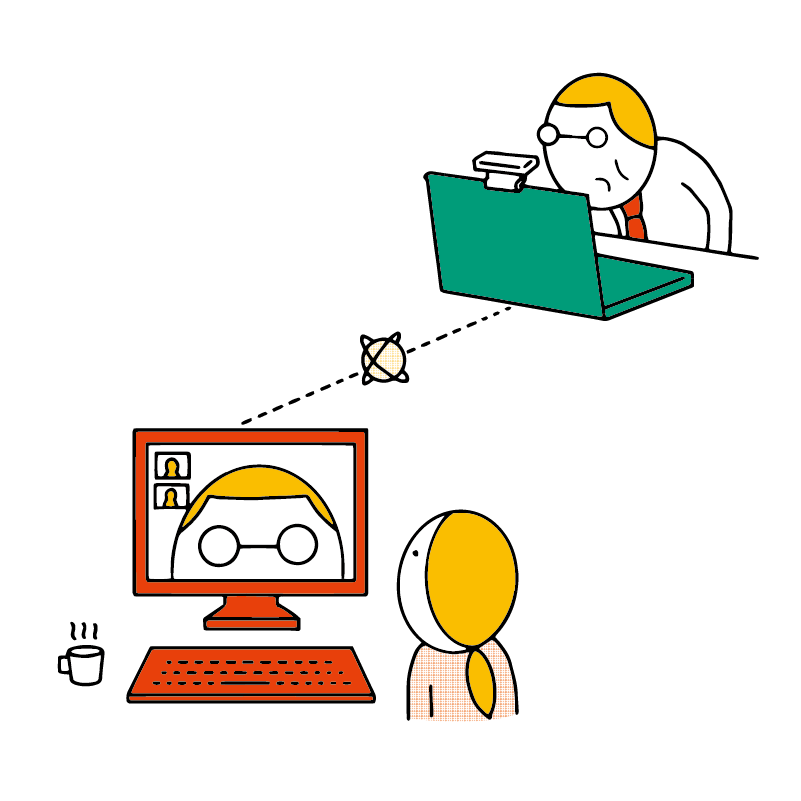
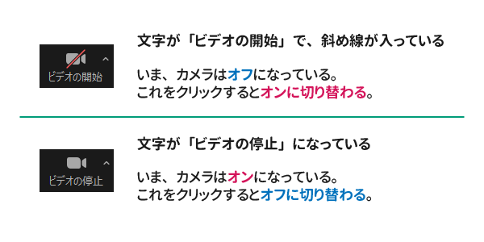
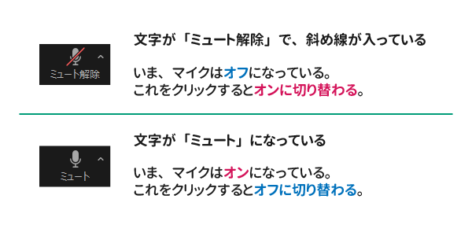

オンライン会議サービス Zoom を使ってみよう（Windows）
オンライン会議ツール Zoom（ズーム）の使い方を学びます。Zoom はテレワークやオンライン授業によく使われているサービスです。
今回の目標
- Zoom のアカウント作成とインストールを行う
- Zoom の基本操作を知る
- 会議の練習をしてみる
Zoom のアカウント作成
//TODO
Zoom のインストール
//TODO
Zoom 会議の練習
まずは練習として、参加者が自分ひとりだけの会議を立ち上げて、練習してみましょう。
パーソナルミーティング
パーソナルミーティングとは、アカウントに 1 つ用意されている「あなた専用の会議室」のようなものです。英語で「個人の会議」を意味する言葉です。
まずはこれを使い、基本的な機能を確認してみましょう。
Google Chrome で Zoom のサイトにアクセスし、右上の ミーティングを開催する にマウスをポイントします。
続いて ビデオはオン をクリックしましょう。
//TODO スクショ
画面が切り替わるので「？？？」をクリックします。//TODO メッセージ確認
//TODO スクショ
Zoom アプリが起動します。
//TODO スクショ
コンピューターでオーディオに参加 をクリックします。
これをクリックすることにより、音声がオンになります。なお、これをオンにしない場合、他の人の音声を聞くこともできません。
繋いだあと、自分の音声をオフにできるので可能なのでご安心ください。
//TODO スクショ
マウスを動かすと、Zoom のウィンドウの下にいろいろなボタンが表示されます。
ここを操作することで、マイクやカメラのオン・オフの切り替えなどができます。
カメラのオン・オフ
カメラはプライバシーの観点から、最も気をつけるべきものです。マウスを動かしたときに出てくるボタンの表示を覚えておきましょう。
実際にこのボタンをクリックしてみて、カメラがオン・オフになっているかを確かめてみてください。
ほとんどのパソコンや Web カメラで、カメラをオンにしている時はカメラ横のランプが光るようになっています。
画面での表示だけでなく、こちらの方法でもカメラが動作しているかどうかを確認できます。
マイクのオン・オフ
マイクもカメラと同様に、オン・オフを切り替えできます。実際に切り替わるか試してみましょう。
マイクがオフになった状態をミュートといいます。
ミュートになっている場合、名前欄の横に赤いマイクと斜線のアイコンが表示されます。
参加者の一覧
「参加者」をクリックすると、いまミーティングに参加している人の一覧が表示されます。
ここで表示される「ホスト」とは、会議の主催者のことです。
チャット
「チャット」を使うと、文字でコミュニケーションができます。また、URL など、文字でないと伝えられないものを会議中に共有する際にも便利です。
名前の変更
参加者一覧やチャット欄に表示される名前を変更できます。
Zoom 画面のどこでもよいので右クリックします。すると、名前の変更 というメニューが表示されるのでこれをクリックします。
画面の共有
自分のパソコンの画面を他の人に見せることができます。オンラインでプレゼン・発表をする際などに利用できます。
//TODO
注意
画面共有を行う際は個人情報やプライバシーに関する情報などが誤って表示されないように気をつけましょう。
たとえば、LINE などのメッセージングアプリなどは終了しておくと安心です。
音声トラブルが起きた場合に備えよう
喋っているのに相手に聞こえない、または相手の声が聞こえないというときは、誤ったマイク・スピーカーが選択されている可能性があります。
パソコンはモニタなどの周辺機器をマイクやスピーカーとして認識する場合があり、スピーカーやマイクを 1 つしか繋いでいない場合でも自動で別の機器が選択されてしまう場合があるのです。
その場合、マイクをオンオフするボタンの右にある Λ をクリックし、他のマイク・スピーカーを選択してみると解決することがあります。
Zoom 会議への参加
他の人が作成した会議に参加する手順を学びましょう。
//TODO
URL を確認する
//TODO
パスワードの入力・待機室
パスワードが設定されている場合、パスワードを入力しないと参加できません。
また、「待機室」とよばれる仕組みが設定されている場合もあります。
複数人が参加する会議での操作
基本的にはパーソナルミーティングと同じなのですが、
Zoom 会議を作成する
自分が会議を主催する場合の手順です。